GTA 6 is set in the state of Leonida — Rockstar's take on modern Florida — with the neon sprawl of Vice City at its heart. Here's every region Rockstar has officially shown, what each tells us about how the game will play, and the map-size claims that are still pure rumor.
- The setting: the fictional US state of Leonida, inspired by Florida.
- The hub: Vice City — Rockstar's Miami analogue — returns as the central city.
- Named regions: Leonida Keys, Port Gellhorn, Ambrosia, Grassrivers and Mount Kalaga National Park have all appeared in official material.
Confirmed regions
Six regions have appeared in Rockstar's official art and trailers. Slide through them below — tap any region to read its details, or grab its wallpaper.
Vice City
The heart of the map and Rockstar's modern Miami. Forget the 2002 pastel fever dream — the 2026 version is a contemporary city of influencers, beach culture, nightlife and money both old and new. This is almost certainly where the story's centre of gravity sits, where Jason and Lucia cross the city's criminal food chain.
Grab the wallpaper →How big is the map?
What the map tells us about gameplay
- Water matters. Two coastal regions plus the Keys means boats, diving and smuggling are likely core, not garnish.
- Two protagonists, one state. Jason starts in the Keys, Lucia's story begins at Leonida Penitentiary — the map looks built to be crossed, repeatedly.
- Wildlife is back. Official material leans hard on gators, herons and swamp fauna — expect Red Dead-grade ambient life.
Leonida in pictures
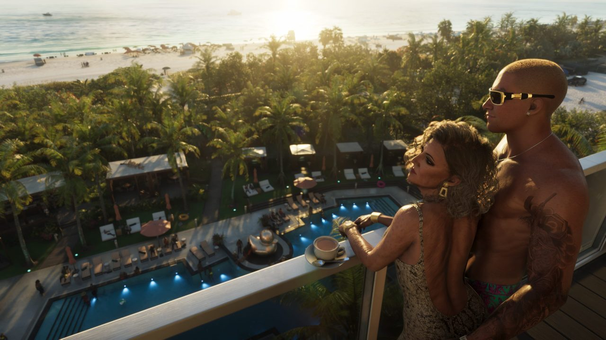
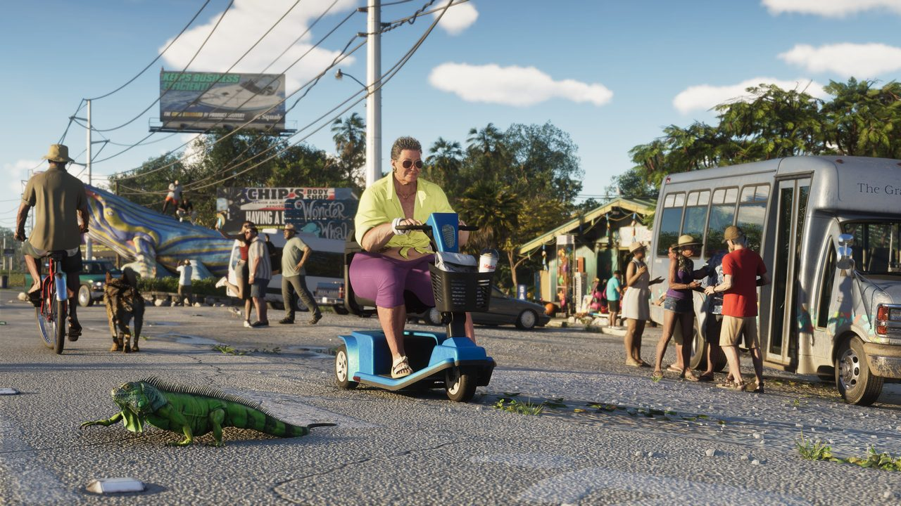
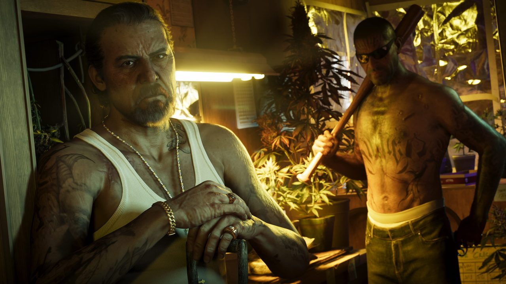
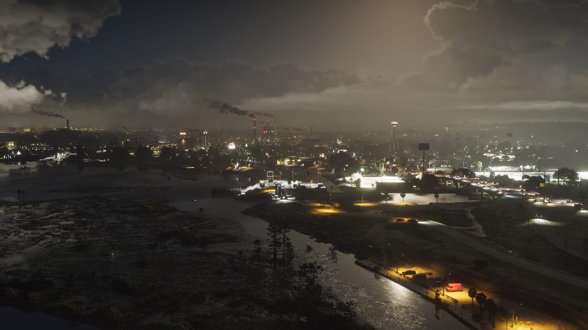
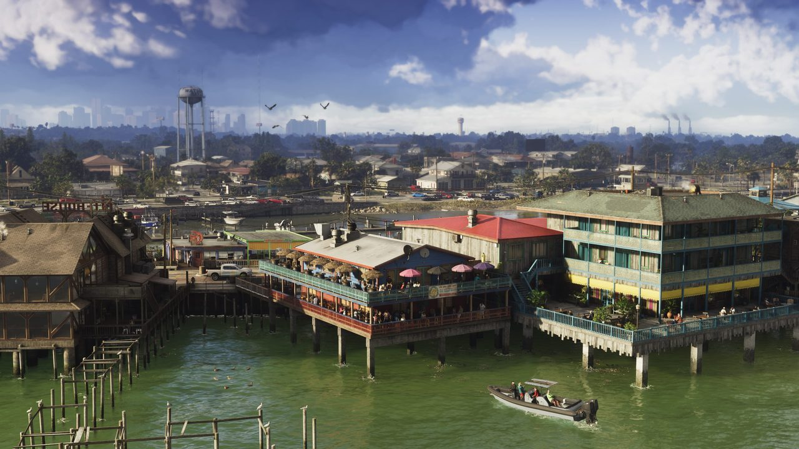
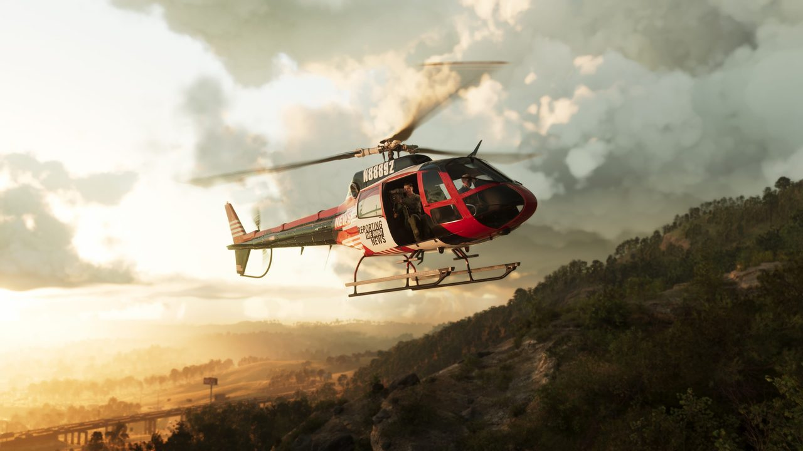
Screenshots: Rockstar Games official press resources.
Postcards from Leonida
Rockstar's official travel-postcard art for every region — also full-size on our wallpapers page.
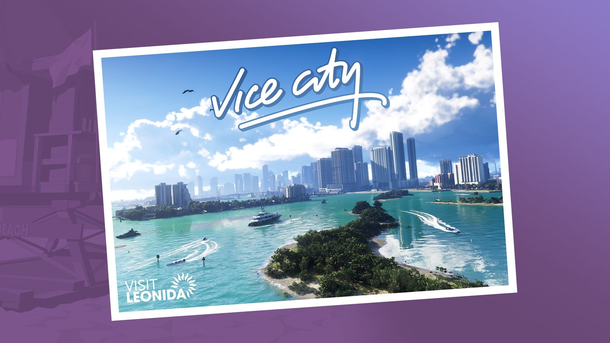
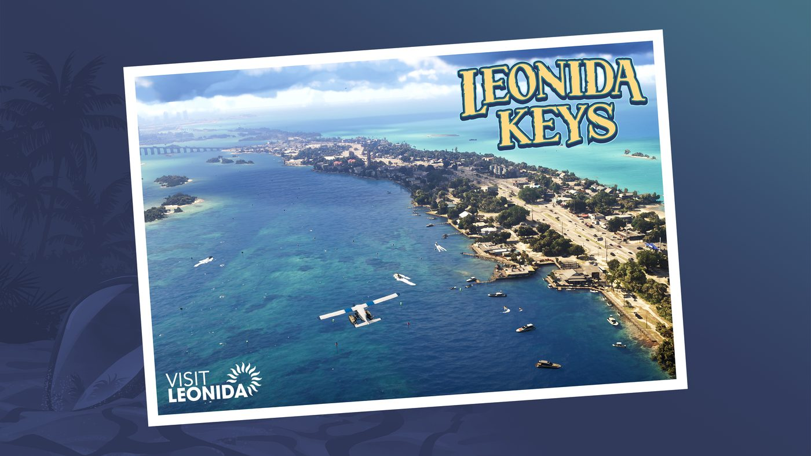
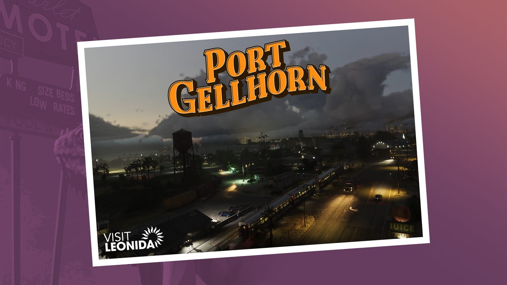
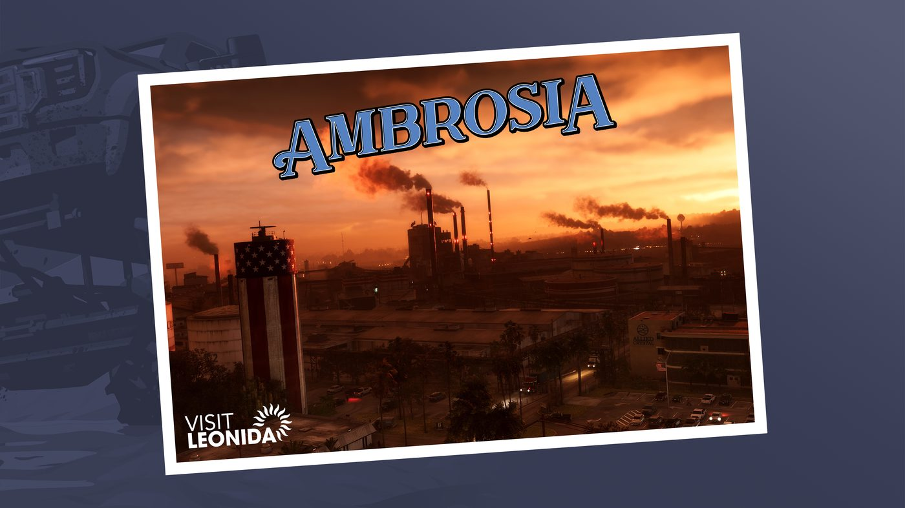
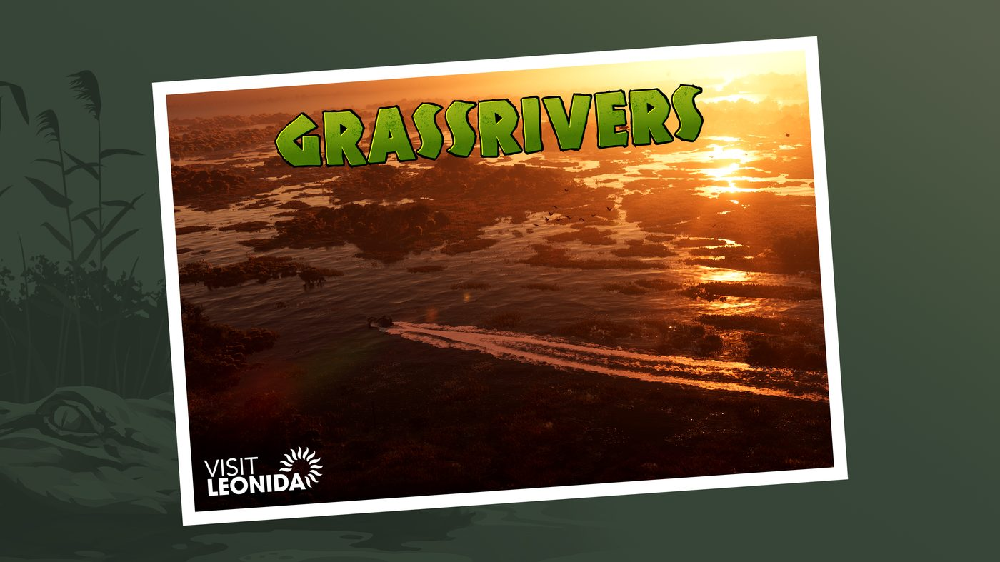
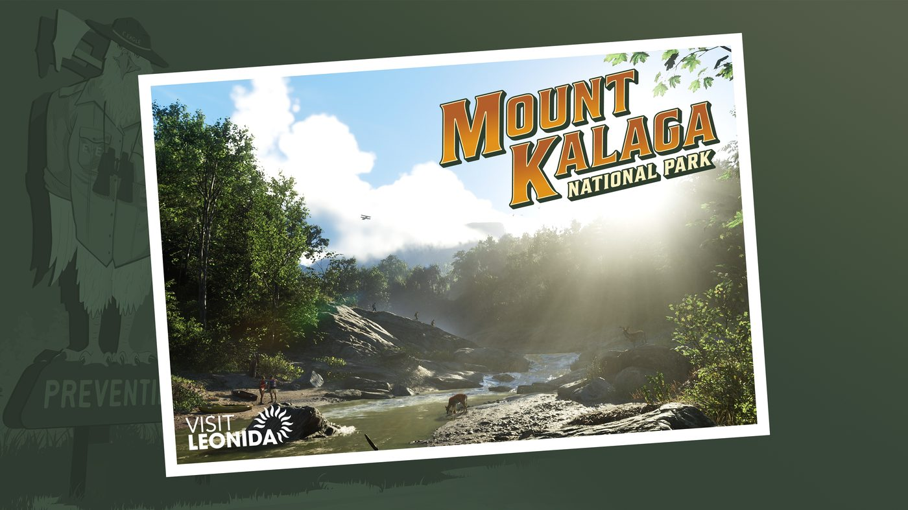
Quick FAQ
Is GTA 6 set in Vice City?
Yes — Vice City is the central hub, inside the larger fictional state of Leonida (Rockstar's modern Florida).
How many regions does the GTA 6 map have?
Six officially named so far: Vice City, Leonida Keys, Port Gellhorn, Ambrosia, Grassrivers and Mount Kalaga National Park.
Is the GTA 6 map confirmed to be bigger than GTA 5's?
It looks larger and more diverse, but Rockstar has not announced an official map size — the "2.5×" figure is a leak, not confirmed.